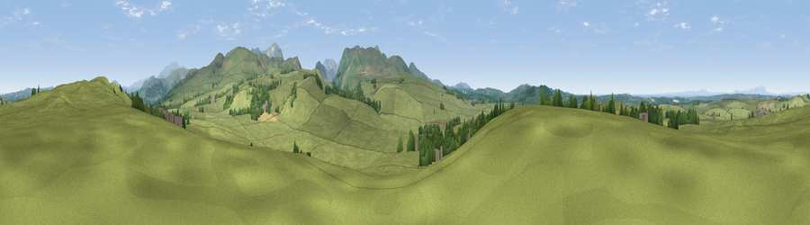

Viewpoint near Pardshaw
#15989 in England · top 71% of its area beats it · near PardshawWhere it is
The exact computed spot (NY 09825 25225). Click the marker for map links.
The view, rendered

A 360° render of this exact spot computed from the terrain model, tree cover and land cover — summer colours, afternoon light, calibrated against photographs of famous viewpoints. Real trees, hedges and buildings will differ in detail.
The panorama
Grey silhouette: terrain skyline in each direction (720 bearings, Earth curvature and refraction included). Dashed green: skyline with trees (+15 m) and buildings (+8 m) as obstacles. Blue strip: how far the ground is visible on each bearing.
Where the view opens
Wedge length = distance to the farthest visible ground on that bearing (vegetation-aware). Rings at 10, 25 and 50 km.
What fills the view
91% grassland · 6% woodland · 2% cropland ·
Angular shares of the visible panorama (visual magnitude), not map area. Landscape diversity 0.18 (0–1 Shannon).
Key numbers
More beautiful places nearby
The staircase of upgrades: each row has a higher view potential than everything closer. Driving times are estimates from straight-line distance, calibrated against real road routing — check an actual route before setting out.
| Place | Direction | Drive | Score |
|---|---|---|---|
| Pardshaw Crag | NE · 1 km | ~2 min | 67.0 |
| Mockerkin How | S · 2 km | ~6 min | 72.4 |
| Whin Fell | E · 4 km | ~9 min | 76.9 |
| Viewpoint near Loweswater | SE · 4 km | ~9 min | 83.1 |
| Viewpoint near Loweswater | SSE · 5 km | ~11 min | 85.5 |
| Blake Fell | SSE · 6 km | ~12 min | 86.9 |
| Crag Fell | S · 11 km | ~20 min | 89.1 |
| Ullock Pike | ENE · 15 km | ~27 min | 89.4 |
54.61410, -3.39783 · source: screening · position refined by local search. Computed location — check access rights before visiting.